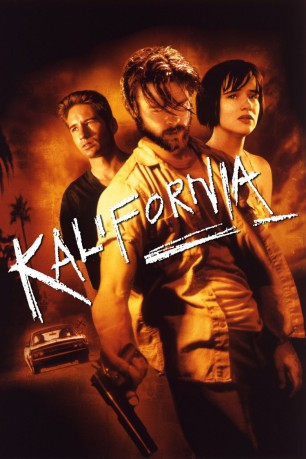

#1288 Kalifornia
 
 IMDB-Wertung: 6.7 / 10
IMDB-Wertung: 6.7 / 10  Metascore: 49
Metascore: 49 
Der Journalist Brian Kessler und seine Geliebte, die Fotografin Carrie, planen einen Artikel über Massenmörder. Sie reisen quer durch die USA, um dort zu recherchieren, wo die Verbrecher ihr Unwesen trieben. Da sie knapp bei Kasse sind, nehmen sie den ziemlich heruntergekommenen Early Grace und seine Freundin Adele mit. Während der Fahrt wird das Benehmen von Early immer unberechenbarer, so dass Brian und Carrie die Angst beschleicht, vielleicht einen echten Serienkiller im Auto zu haben...
Jahr: 1993
Dauer: 117 Minuten
FSK: 18
Land: USA Studio: ITonspuren: DTS - ,
Untertitel: Deutsch,
Auflösung: 1080p (1920x816) Größe: 8110 MB
Genre: Krimi, Drama, Thriller
Regisseur:  Dominic Sena
Dominic Sena
Drehbuch: Stephen Levy, Tim Metcalfe, Tim Metcalfe
Soundtrack: Carter Burwell
Darsteller:
 Brad Pitt als Early Grayce
Brad Pitt als Early Grayce David Duchovny als Brian Kessler
David Duchovny als Brian Kessler Michelle Forbes als Carrie Laughlin
Michelle Forbes als Carrie Laughlin Juliette Lewis als Adele Corners
Juliette Lewis als Adele Corners- Judson Vaughn als Parole Officer
- Patricia Sill als Carol
 Brett Rice als Police Officer
Brett Rice als Police Officer- Mary Ann Hagan als Waitress
- Mars Callahan als Walter Livesy
- Loanne Bishop als Female Officer
- Tom Hand als College Student , uncredited
- Shelby Hofer als Waitress , uncredited
- Patricia Tallman als (uncredited
- Kathy Larson als Teenage Girl
- David Milford als Driver
- John Zarchen als Peter
- David Rose als Eric
- Tommy Chappelle als Old Man
- James Michael McDougal als John Diebold
- Marisa Raper als Little Girl
- Bill Crabb als Middle Aged Farmer
- Jerry G. White als Gas Station Attendant
- Sarah Sullivan als Bar Waitress
- Eric Stenson als Young Cracker
- Patricia Hunte als Newscaster
- Ron Kuhlman als Male Officer
- Sierra Pecheur als Mrs. Musgrave
- John Dullaghan als Mr. Musgrave
Datei: X:\FSK18-1900-1999\Kalifornia (1993, FSK18, 1920x816).mkv seit 16.06.2015
Festplatte: FSK18
 Es gibt insgesamt 108 Filme in der Gruppe 'FSK18-1900-1999'
Es gibt insgesamt 108 Filme in der Gruppe 'FSK18-1900-1999'